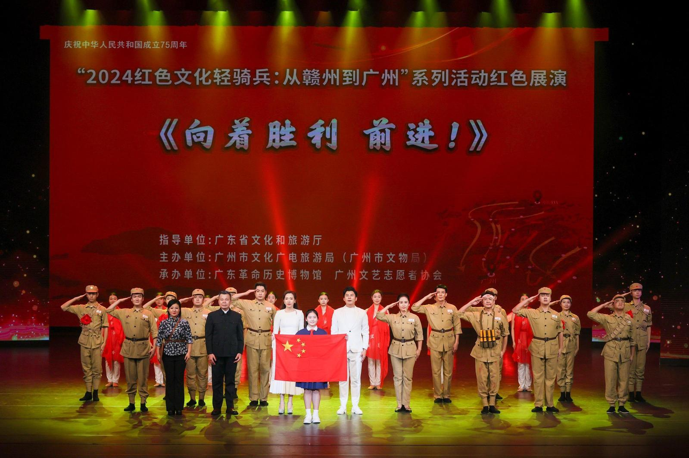
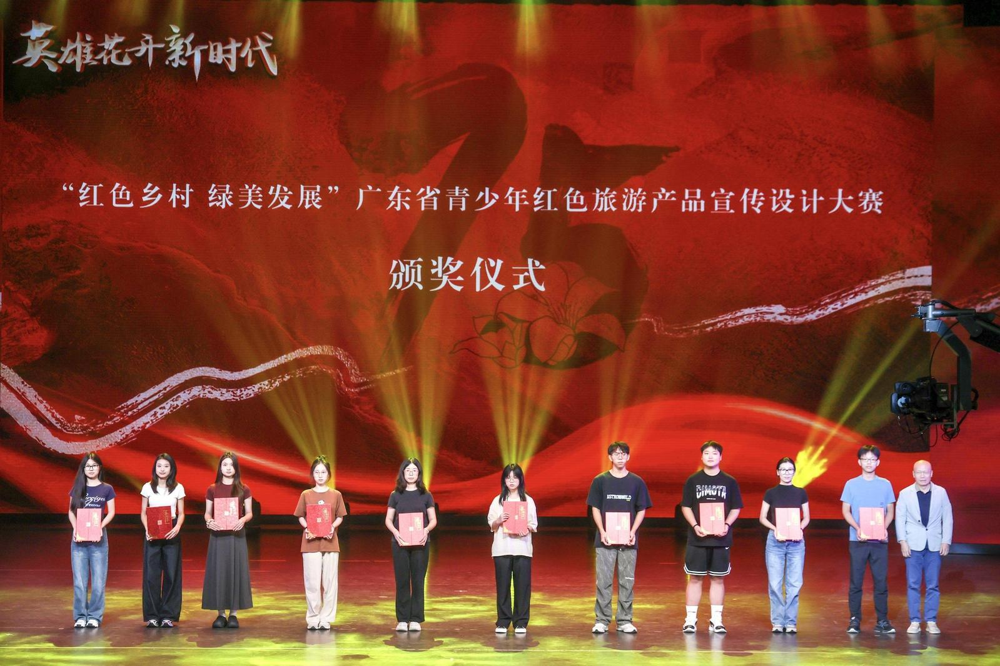
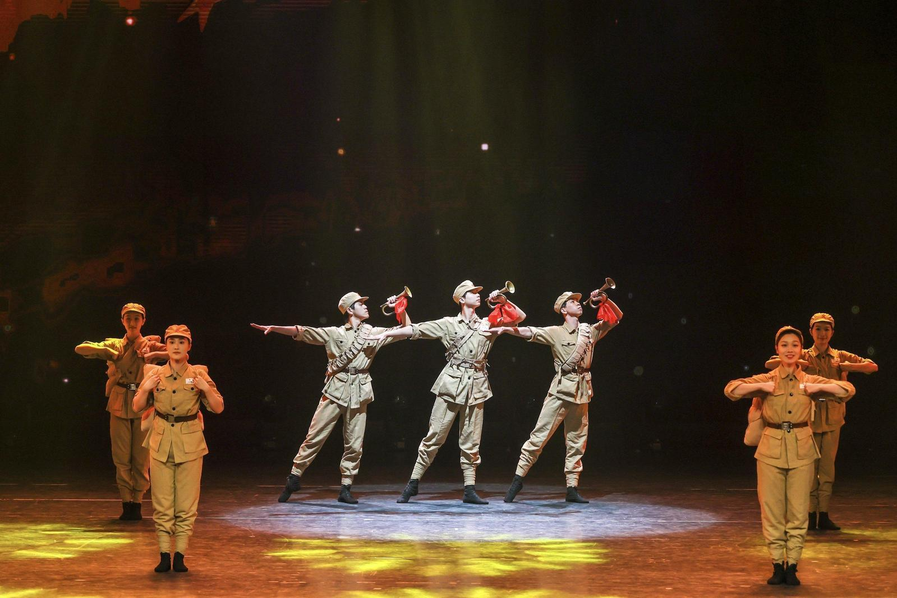
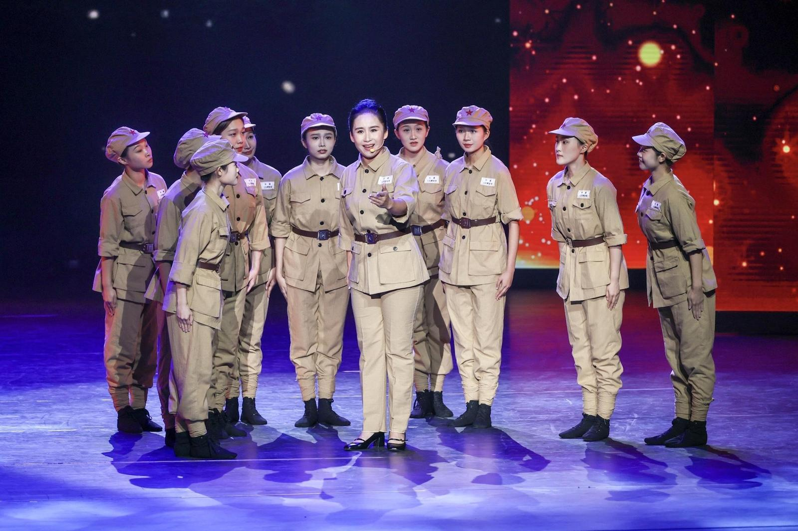
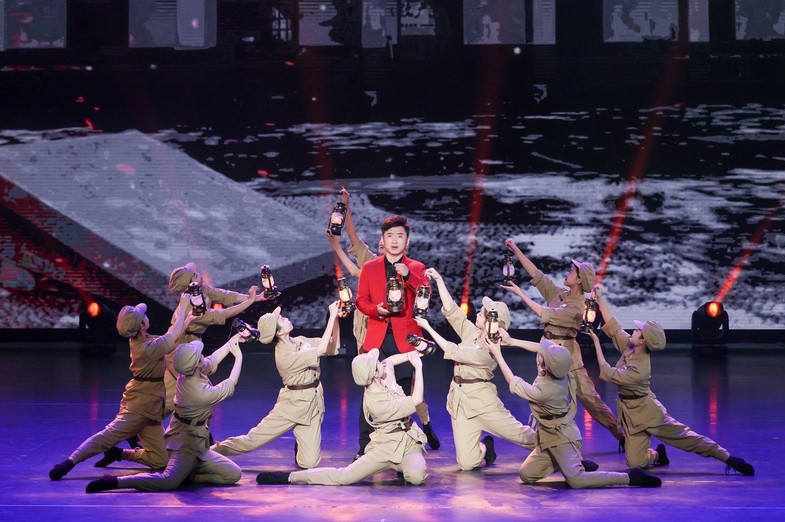
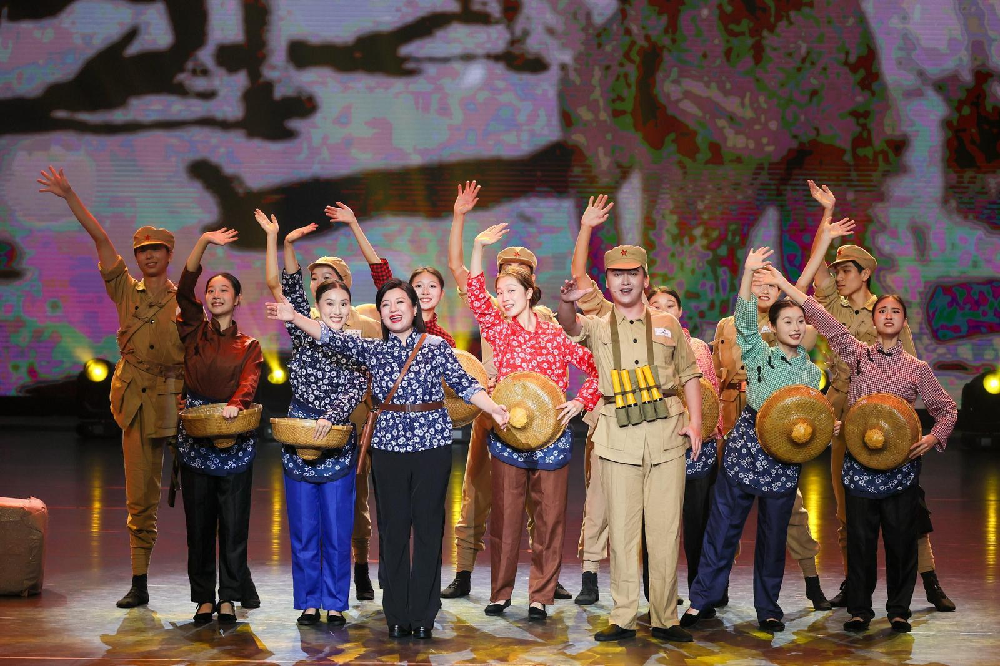

10月14日晚，“英雄花开新时代——庆祝广州解放75周年暨2024红色文化轻骑兵活动成果展演”在广州市文化馆举行。本次活动由广东省文化和旅游厅、中共广州市委宣传部指导，广州市文化广电旅游局（广州市文物局）主办，广东革命历史博物馆（以下简称“广东革博”）、广州市文化馆承办。

红色文化展演致敬祖国
1949年9月，根据党中央部署，中共中央华南分局召开赣州会议，研究南下解放广东计划；10月2日，解放广东战役正式打响，人民解放军挥师南下；10月14日，广州解放，千年羊城开启新纪元。75年后的2024年10月14日，主办单位以一场惠民红色文化展演致敬祖国、礼赞新时代。
活动现场，诗朗诵《悠悠客家情 赣粤一家亲》深情讲述江西和广东、赣州和广州的深厚历史渊源。随后，“2024红色文化轻骑兵：从赣州到广州”活动重要成果——“红色乡村 绿美发展”广东省青少年红色旅游产品宣传设计大赛获奖作品、“英雄花开新时代——庆祝广州解放75周年”H5、红色主题音诗舞剧《向着胜利 前进！》逐一登台，展示丰盛的活动成果。

其中，《向着胜利 前进！》是活动举办单位精心打造的红色主题音诗舞剧。多名一级演员领衔、50多位演员倾情演出，通过情景讲述、舞蹈等艺术形式的有机融合，生动再现人民解放军南下解放广州的光辉历程，讲述各革命旧址的红色故事。
该剧以原创歌曲《红棉的故事》拉开序幕，将革命歌曲《欢腾粤赣边》融入其中，并且将《广东情况报告》、“威震敌胆”锦旗、潘玉德的军功章、广州解放“功臣炮”等革命文物资源与演出相结合，让革命文物真正“活”起来。

逾1500万人次参与活动
本次展演既是庆祝广州解放75周年的重要活动，也是“2024红色文化轻骑兵：从赣州到广州”活动的全面总结。

据介绍，“红色文化轻骑兵”是广东革博于2021年首创的品牌教育项目。四年来，该活动围绕“串联红色线路 追寻革命足迹”“启航1925”“一村一物一故事”等主题，以线上线下“两条腿走路”，绘就了一幅生动鲜活的新时代红色地图。

“2024红色文化轻骑兵：从赣州到广州”活动围绕人民解放军南下解放广州这一重要的革命历史而展开。
活动于8月14日从赣州出发，沿着人民解放军南下的转战路线，途经韶关南雄、河源东源、惠州惠东、清远佛冈、广州从化等地。活动行程2689公里，将沿途革命遗址变为教学“课堂”，通过“广州1949”图片展、“英雄花开！”线上线下互动、《向着胜利 前进！》红色主题音诗舞剧、惠民演出、“红色乡村 绿美发展”之“寻美乡村”直播、“探村行动”直播、“红色乡村 绿美发展”广东省青少年红色旅游产品宣传设计大赛、“红色物语”微视频、“1949南下胜利之路”党建及研学路线、数智惠民，以及“1949南下：从赣州到广州”原创展览、“英雄花开新时代——庆祝广州解放75周年”H5以及本次成果展演等13项子活动，讲述红色故事、传承红色基因。
据统计，本次活动共有1.4万多人次线下参与，超过1518万人次线上参与。

广东革博相关负责人表示，该馆将继续深挖红色资源价值内涵，拓展红色文化传播平台，推进“红色文化轻骑兵”活动，让革命文物“活”起来，让红色故事火起来。